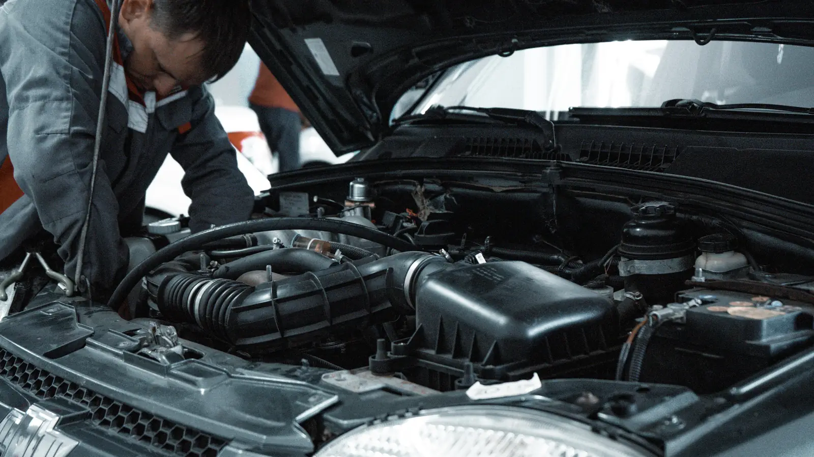
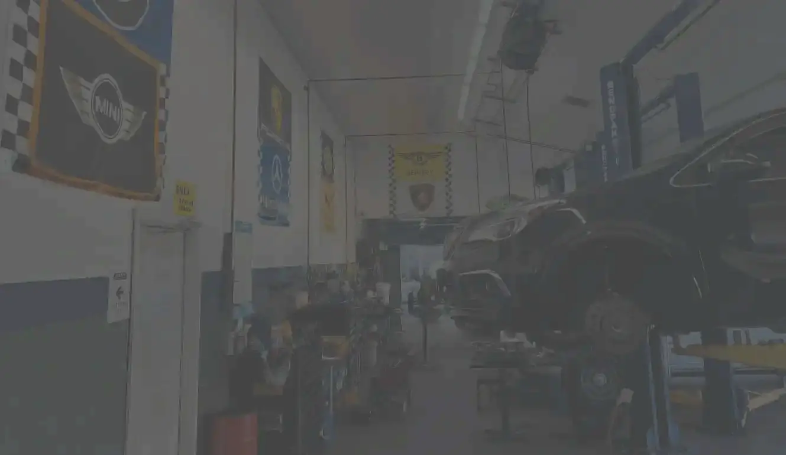
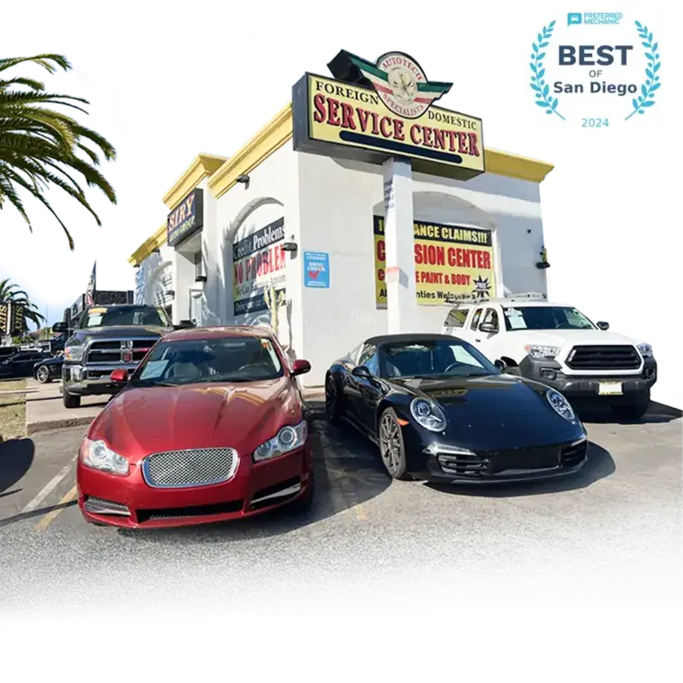
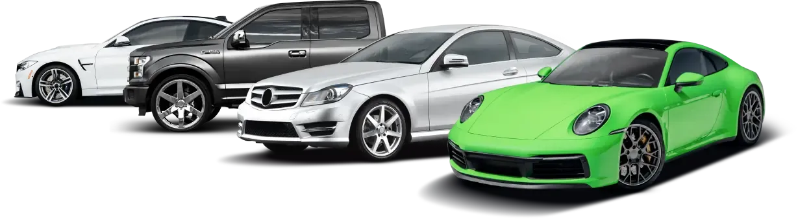

Diagnostics & Check Engine
Factory-level scan tools to find the actual fault — not a guess. Clear explanation and a written estimate before any work starts.

Kearny Mesa · Family-Owned Since 1999
One 19-bay facility for everything your vehicle needs — diagnostics, maintenance, collision restoration and hybrid/EV service. ASE-certified technicians, OEM-quality parts, same-day turnaround.
Certified, accredited & trusted by


What we do
Domestic, European, Japanese, Highline, Hybrid and Exotic vehicles — diagnosed, repaired and returned on schedule by an ASE-certified team.
Factory-level scan tools to find the actual fault — not a guess. Clear explanation and a written estimate before any work starts.
Pads, rotors, calipers, struts, alignment-critical components. Road-tested before hand-back, every time.
Minor dings to major structural damage. Factory-quality refinishing, PDR for hail and door dings, insurance handled for you.
Hybrid-certified technicians for high-voltage systems, battery health checks, regen braking and EV-specific maintenance.
State smog testing and pre-purchase inspections done right the first time — no hassle, no surprise re-tests.
We work directly with Geico, State Farm, Allstate, Progressive and most major carriers — and we're a GWC Warranty Premier Service Center.
Oil changes, belts and hoses, timing belts, batteries, fluids and factory-schedule servicing that protects your warranty.
Broken down and need it now? Same-day service where possible, and 24/7 key drop-off so your car is in the queue before we open.
European & specialty
BMW, Mercedes-Benz, Porsche, Audi, Range Rover, MINI, Volkswagen and Tesla — serviced with the same diagnostic equipment and OEM-quality parts the dealer uses, by technicians who work on them daily.



Why choose us
Since 1999, Auto Tech Specialists has kept San Diego drivers safe and on the road. We tell you what your vehicle actually needs, what can wait, and what it will cost — before we pick up a wrench.
Smog, collision and diagnostic specialists across 19 bays.
We don't cut corners on the components that keep you safe.
Most routine work is back with you the same day.
A documented walk-around on exterior, interior and mechanicals.
How it works
Reserve a slot online or use the 24/7 key drop — including weekends — and we'll start first thing.
Free visual inspection and a written estimate. Nothing goes ahead until you approve it.
Work completed with OEM-quality parts, road-tested, and covered by our 12mo/12k warranty.
Reviews
Once again 100% proven performance. I give thanks to Raymond, Eddie and all the staff that contributed to having my car serviced in a timely matter.
Reliable, fair and quality service. They always fit me in & I appreciate everyone here who is so kind and makes sure I'm safe on the road.
Hundreds more
Read what San Diego drivers say about us on Google, Yelp and Angi — then book your slot.
Book Your SlotInsurance & warranty
We work with all major insurance and warranty providers so you can get back on the road without chasing adjusters. As a GWC Warranty Premier Service Center, claims are processed directly and approved faster.

Kearny Mesa · Clairemont · Convoy · Serra Mesa · Mission Valley · Linda Vista · Tierrasanta · and across San Diego County

Book now
Tell us about your vehicle and we'll confirm your slot. Prefer to talk? Call us — a real person picks up.